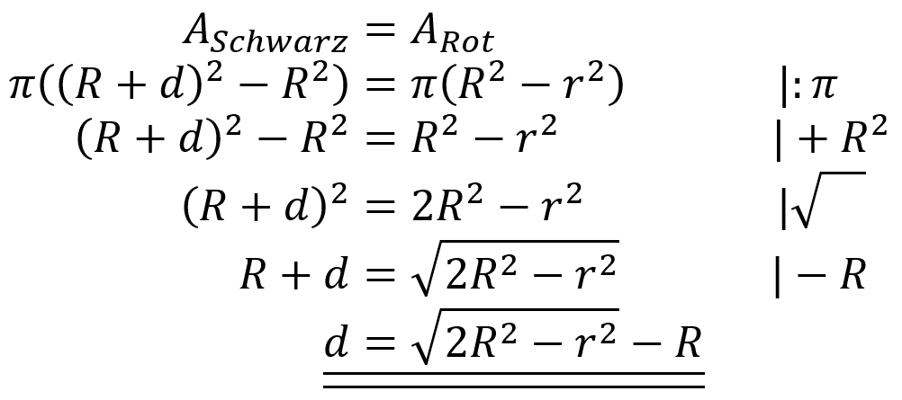

Anforderung: Die Fläche des roten Kreisrings Arot soll ebenso gross sein wie die Fläche des schwarzen Kreisrings Aschwarz. Bestimme die Dicke d (Wandstärke) des roten Kreisrings in Abhängigkeit von r1 (r) und r2 (R).

r1 = {{ r }} cm
r2 = {{ rr }} cm
Fläche roter Kreisring = schwarzer Kreisring = {{ ringArea }} cm2
Wandstärke schwarz: d = {{ ringThickness }} cm